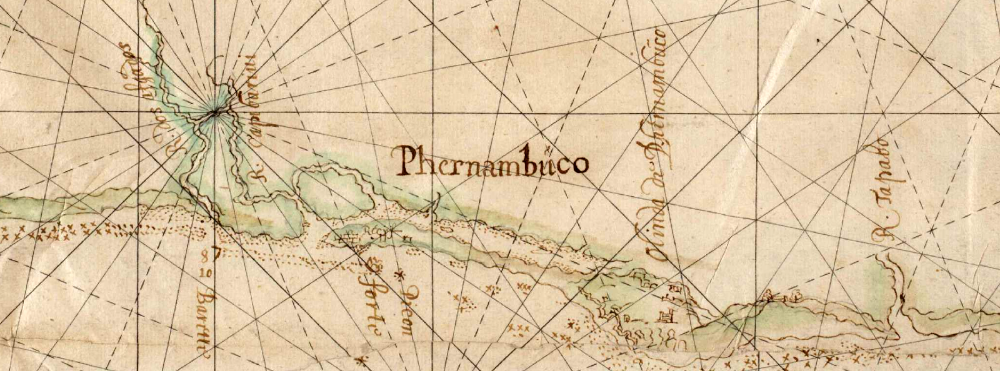
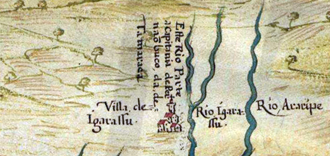
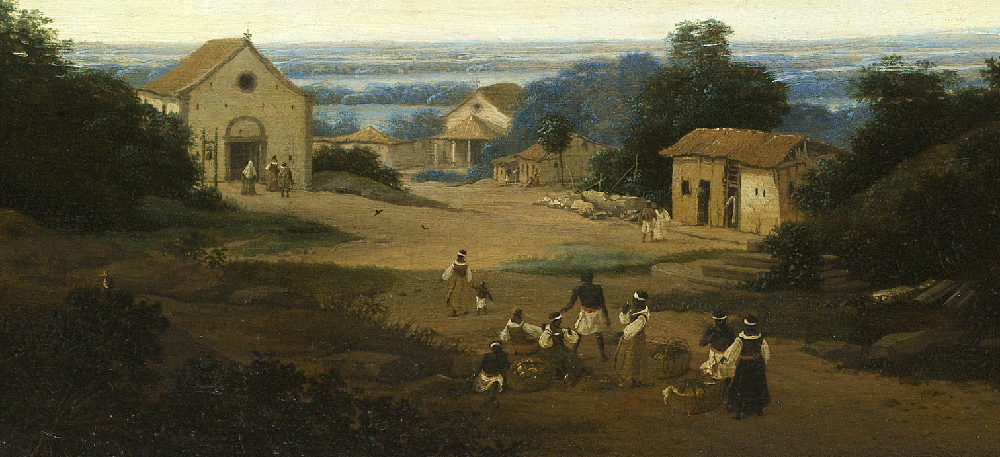
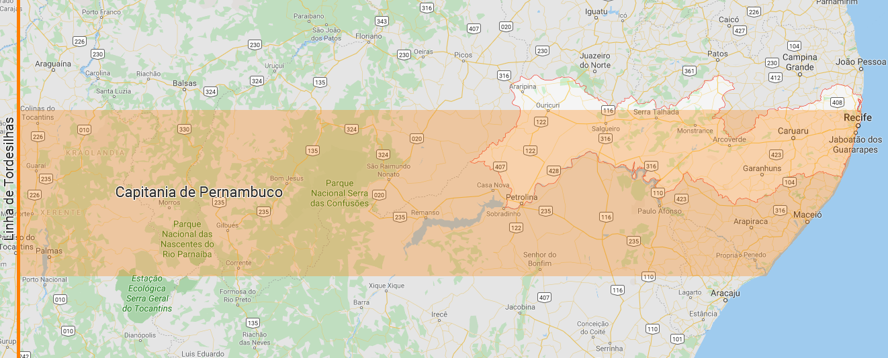
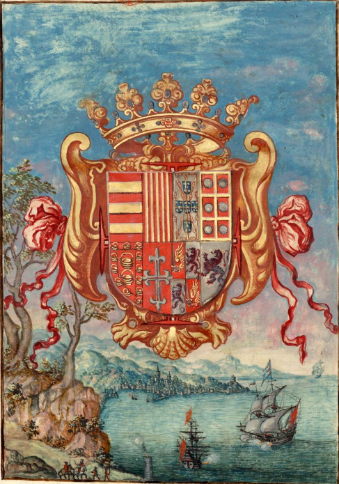

🦀 A idealização de Pernambuco
Essa região que venho desenhando nos últimos textos, o litoral das Alagoas, Pernambuco, Paraíba, Rio
Grande do Norte e o Ceará, possui, dentro de suas diferenças locais, uma mesma história. Não por acaso,
essa parte do Brasil possui características políticas e culturais como um todo muito próximas. Também
não por acaso, Pernambuco, dentre as capitanias desse território, teve a ocupação portuguesa de maior
sucesso. Qual era a ideia por trás de “Pernambuco”?

Recorte do mapa da costa do Brasil do século 17.
O português coloca o dedo no caldo
A terceira expedição portuguesa inicia o processo de escravização nativa, coação e
saques constantes. Em
30 anos, os portugueses entraram em contato com todas as nações do litoral do Brasil e passaram a
conhecer suas peculiaridades. Observaram que havia uma disputa entre os caetés, tabajaras e potiguares e
ofereceram aliança aos tabajaras, que passaram a ser nação amiga. Tanto os caetés, quanto os potiguares
continuariam a ser resistência por muitos anos.
Em 1535, os portugueses se instalam com (moderado) sucesso em Igarassu sob ajuda tabajara, mas essa ajuda
nunca foi por inocência ou ingenuidade. Os tabajaras sabiam o que faziam e, para eles, foi necessário
que assim se fizesse. Ao observar o poder branco em combate, detentor de ferro e fogo, essas populações
nativas observaram os portugueses como uma ferramenta ou ameça para projeção de poder sobre as outras
nações.

Detalhe da costa pernambucana do Atlas do Brasil de João Teixeira Albenaz (1666). O
pequeno parágrafo diz “Este rio parte a capitania de Pernambuco da de Itamaracá” à grafia da época.
Os portugueses eram, e seriam por toda a história, minoria em número diante da população brasileira. Não
havia outra forma de penetração se não a política e eles traiçoeiramente utilizaram dessa abertura
oferecida pelos tabajaras como forma de conquista daquelas terras. Essa foi apenas a primeira vez que se
aproveitariam da dinâmica indígena para ganhar vantagem, os golpes portugueses continuaram por muito
tempo. Esse mecanismo foi exaustivamente repetido até que se extinguisse significativamente a dinâmica
nativa no litoral.
Com o estabelecimento de Igarassu, ficaria mais fácil de penetrar ainda mais na terra e enfraquecer o
poder das outras nações tupis, seja por política ou pelo modo que mais seria praticado: genocídio.

(recorte da) Vista de Igarassu por Joan Blaeur (1647), um século depois da invasão.
Muito me intriga nessa história
Até hoje eu me pergunto sobre os nomes das nações que interagiam com Portugal naquele momento. Quer dizer
muito, pra mim, que a nação que tenha se aliado com Portugal se chamasse de “senhores da terra” (
como
contou frei Jaboatão
) ou “moradores da aldeia” (segundo Teodoro Sampaio), enquanto as outras se
chamassem de “homens da mata nativa” (caeté) ou “comedores de camarão” (potiguar). Enquanto as inimigas
são nomeadas por características que contruibuiram na alegorização do “índio”, a aliada é elevada ao
posto de senhor da terra, mesmo sendo uma população tão pequena comparada com as caetés e potiguares.

Detalhe da visão de Igarassu por Frans Post. “ Braziliaans landschap met het dorp Igaraçú.
Links de Cosmas en Damianuskerk” (1659).
Pernambuco é uma invenção branca
Convenhamos, Pernambuco é uma invenção branca. Pode haver umas histórias bonitas aí da boca de Fernão, do
buraco no mar, mas vamos pensar: Pernambuco como conhecemos foi um presente da coroa a um português.
Alguém sentado em Lisboa olhando para um mapa precário decidiu que seu primeiro donatário,
Duarte
Coelho, receberia a fatia de terra de 7 para 8 graus em latitude descendo até o São Francisco.
As terras
entrariam 50 léguas para dentro do continente, isto é, o limite do tratado de Tordesilhas. Este é
“Pernambuco”.

Com o passar do tempo e com os problemas com o império brasileiro, Pernambuco foi se
desenhando no formato atual.

Brasão da União Ibérica do atlas de João Teixeira Albernaz “Descrição do Estado do
Brasil” (1627).
Duarte Coelho não era um cara de origem nobre. Ele era um homem bastardo que pelo exército português,
participou das invasões da Índia e da China. Por obter um admirável desempenho por lá, João III, rei de
Portugal, o presenteia com uma capitania. Desse modo, Coelho decide aproveitar a oportunidade e fazer
sua riqueza no Brasil, já que pelos olhos da sociedade portuguesa, ele não era tão importante assim. Em
1530, ele vem a Pernambuco com seus familiares, amigos e outros mais que quiseram vir. E aí sim, essa é
uma grande diferença de Pernambuco para a maioria das outras capitanias: houve legítima vontade de
ocupar e povoar as terras com gente portuguesa e isso impactou toda a história dessa região do Brasil. O
mesmo acontecia em São Vincente com Martim Afonso.
Como sabemos, as coisas não terminaram tão bem assim para os portugueses. O jogo muda depois das invasões
holandesas. Até lá, toda a resistência contra outros invasores europeus será desempenhada por locais
pernambucanos, portugueses, tupis, negros e mestiços, sem a interferência da coroa portuguesa, que mesmo
recebendo as taxas sobre a produção de madeira e açúcar, respeitava a independência da gestão dos
donatários dessa capitania. Na minha opinião, esse é o embrião da força separatista desse lado do país.
Outros europeus
Desde os tempos de saques portugueses pela costa do Brasil, outra nação europeia, não satisfeita com o
tratado de Tordesilhas¹, também realizava saques esporádicos. Os franceses obtiveram relações de
amizade
com ambas as nações caetés e potiguares e, na minha opinião, essa é uma contradição que ilustra como os
portugueses manipularam toda a narrativa sobre os habitantes originais desse país.
Inúmeros relatos da época, incluindo o do primeiro donatário, Duarte Coelho, contam da presença dos
franceses por aqui e a dor de cabeça que eles ofereciam aos negócios portugueses. A resistência caeté ao
sul do Recife até o rio São Francisco foi mantida sob ajuda francesa por muito tempo. O mesmo acontecia
com os potiguares ao norte.
Apesar dessa leitura de contraposição aos portugueses, é importante enfatizar que os franceses também
tratavam os nativos com violência e subjulgação. Igualmente, eles extraíram pau-brasil com a força de
trabalho local.
Recorde do mapa da costa do Brasil de Jacques de Vau de Claye (1579). O parágrafo diz “O
caminho por onde os selvagens vão buscar a madeira de brasil e há 40 horas (?) de caminho desde São
Domingos até a floresta”.
Não diferentemente, Recife também é uma invenção branca. É verdade que hoje os conceitos geográficos
foram ressignificados de tal modo que não conseguimos mais separar a organização europeia da nossa
política da ancestralidade local. Então, nos resta observar e nos perguntar o quê Pernambuco significa
para cada um de nós. Para os franceses, Pernambuco é também o nome do pau-brasil, em
francês. Nada de
fato é por acaso e cada pedaço de pedra desse lugar parece se encaixar em um grande projeto de dominação
e controle.
¹ O tratado de Tordesilhas foi assinado entre as coroas portuguesa e espanhola sob moderação do Vaticano
para dividir as terras do Novo Mundo.
O Tratado de Tordesilhas, na
Wikipedia.
Referências desse texto